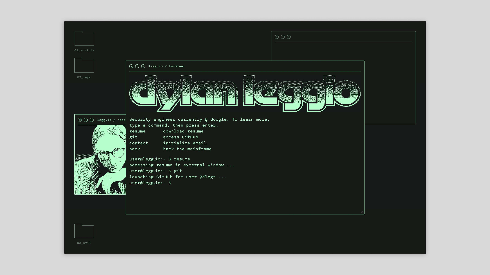
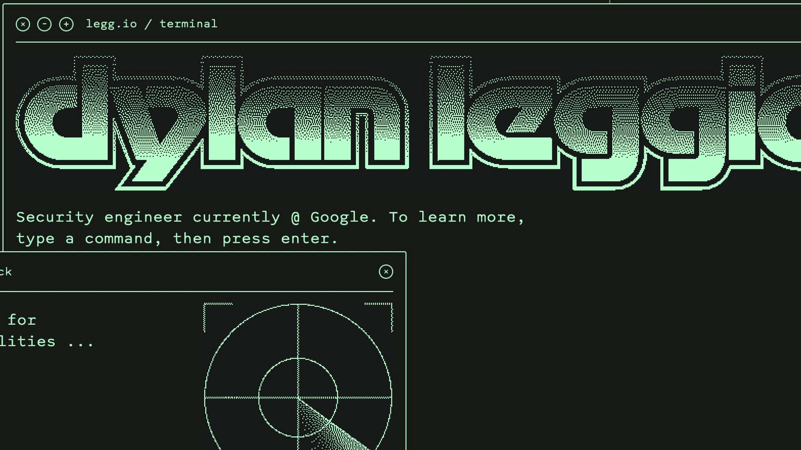
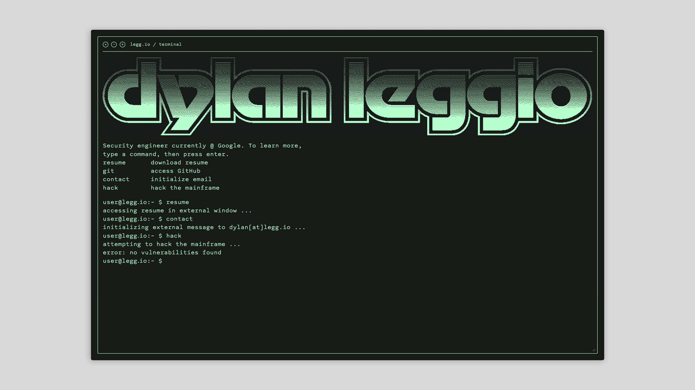
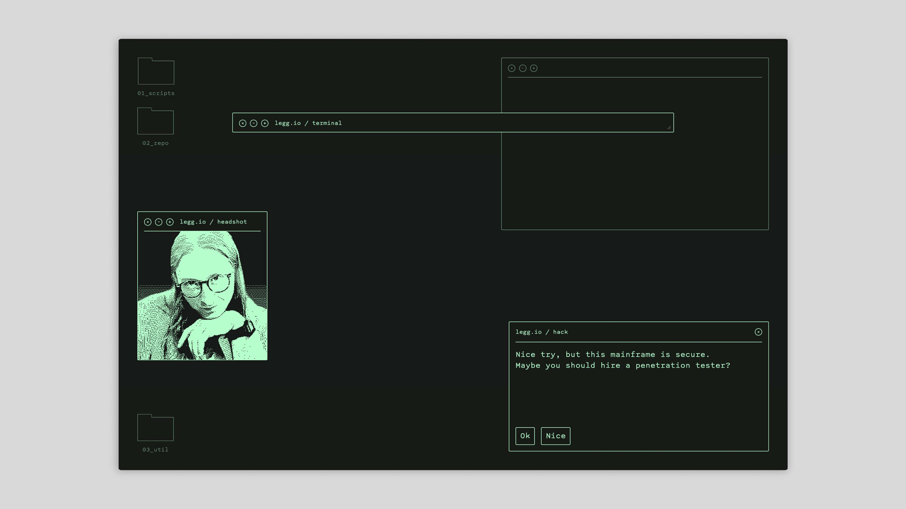

Microsite Dylan Leggio
Site design and build for Dylan Leggio, a cybersecurity engineer, penetration tester, bug bounty hunter, and hacker-for-hire.
The site is built around a terminal emulator, which the user is taught to interact with as an engineer might engage with a command line interface. Inspired by cyberpunk classics like Hackers and Blade Runner, I suffused the site in retro-futuristic pastiche, with custom loading animations, dithered media, and a CRT-screen palette.

The site's wordmark revives Motter Tektura, a long-deprecated typeface that defined Apple's early years.

In addition to standard interactions, like accessing his resume and code base, visitors can try to "hack" Dylan's site — only to learn it's too well-secured.


Users can drag, resize, maximize, minimize, or quit windows, customizing their experience just like they would on a real-world operating system.
A bespoke dithering program renders images and videos in real time, ensuring consistent pattern density across the site, even when images scale.



Visit the live site at dylan [dot] legg [dot] io.